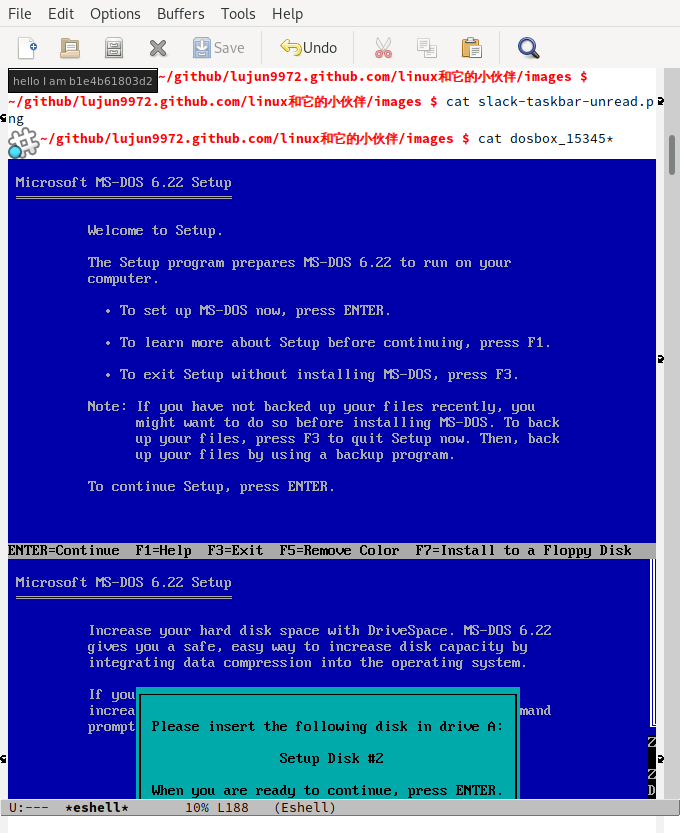

在eshell中用cat命令显示图片
今天偶然发现，在开启了 auto-image-file-mode 后，在eshell中cat 图片文件会直接显示图片，而不是二进制的文件内容。

可惜就是最后缺少了个换行符.
我们也可以自己定义一个自己的icat来专门显示图片：
(defun eshell/icat (&rest args) "Display images in ARGS." (setq args (eshell-stringify-list (eshell-flatten-list args))) (eshell-eval-using-options "icat" args '((?h "help" nil nil "show this usage screen") :external "feh" :show-usage :usage "IMAGES Show IMAGE to standard output.") (dolist (image-fpath (mapcar #'expand-file-name args)) (when (file-exists-p image-fpath) (eshell-buffered-print "\n") (add-text-properties 0 (length image-fpath) `(display ,(create-image image-fpath) modification-hooks (iimage-modification-hook)) image-fpath) (eshell-buffered-print image-fpath) (eshell-flush)))))
eshell/icat